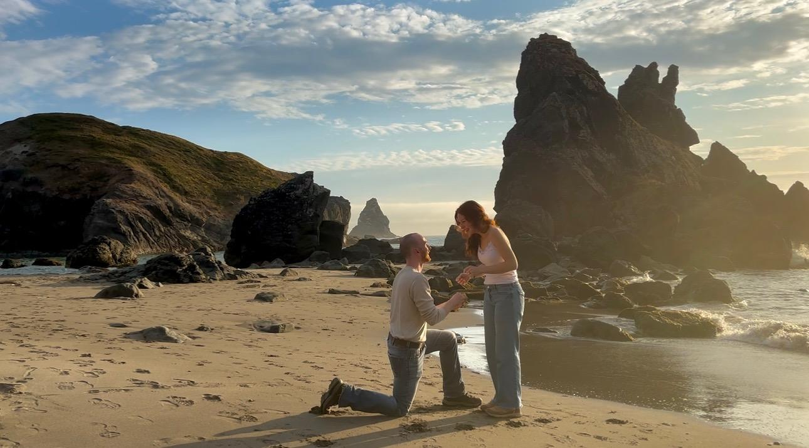

June 6th, 2027
Lake City, CO
Days Left:
Austin and Macy met September 26th 2023. A chance meeting at the OU cafeteria resulted in a first date, a second, and then many more. They explored a haunted school together, roadtripped the Talahina drive, then took a big chance and moved together to Durango Colorado. They both love the mountains they now live near and since moving have together explored many trails and amazing hikes the Rocky Mountains have to offer. Going on two years together and after many adventures in the southwest, On a secluded beach in southwest Oregon, Austin asked the question. Now a new chapter of Austin and Macy's lives is beggining in the heart of the San Juan Mountains. They cannot wait to celebrate their love with friends and family next summer at Lake City!

June 5th, Location TBD
June 6th @4:30 PM, The Tack Shed, Lake City CO
Casual
We can’t wait to celebrate with you! Please RSVP by January 1st 2027.
RSVP Now